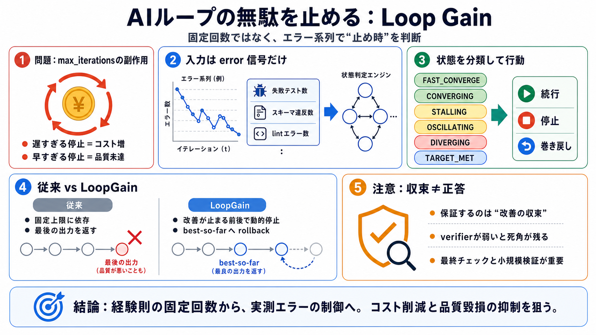

Barkhausen stability criterion
The Barkhausen stability criterion serves as the foundational design principle for electronic oscillators, where compone…

AIループの無駄を止める
AIエージェントの反復（生成→検証→修正など）を、観測したエラー系列にもとづき停止し、必要なら最良出力へ巻き戻すオープンソース制御ライブラリです。
固定上限の副作用
多くの実装は max_iterations=N のように固定回数で止めますが、遅すぎる停止（コスト増）か、早すぎる停止（品質未達）が起きます。
発振を見て止める
フィードバック制御で“発振する条件”を見抜く発想を、エージェントのエラー系列の“実測ループゲイン”に写像して運用します。
必要なのはエラーだけ
各反復で観測できる非負の数値（または誤り量を表す系列）を渡すだけで、停止・巻き戻しを判断します。
分類して行動を決める
エラー系列から比率・対数傾向・統計的有意性・残差の振動量などを特徴量化し、状態に分類して次のアクションを選びます。
“止め時”は実測で
固定上限ではなく、エラー系列の制御理論的分類で停止時点を動的に決めるため、無駄な反復を削減できます。
最後じゃなく最良を返す
発散や悪化が疑われる場合でも、単に“最後の出力”を返さず、バッファ内の最小エラーだった反復出力へ巻き戻します。
“正しさ”の保証は別
LoopGainの“収束”は、正解かどうかではなく「エラー信号が改善し、これ以上良くならない」状態を指します。
よく効く設計要素
効果が出るには、ループが反復可能で、より良いほど小さくなるエラーを用意でき、そして“収束”の意味が運用に合う必要があります。
ノイズに保守的
t-test等の統計的判定を使い、意味のある変化があるかを見ます。LLMの揺れが大きい場面でも保守的に誤検出を抑える狙いです。
最大のリスクはverifier
エラー信号の死角によりエラーがゼロ相当に見えてしまうと、LoopGainは検知できず早期停止することがあります。
導入の勘所
LoopGainは「経験則の固定回数」から「エラー系列の制御」に置き換え、コスト削減と品質毀損の抑制を狙います。ただし保証できるのは“正しさ”ではなく“改善の収束”です。
The Barkhausen stability criterion serves as the foundational design principle for electronic oscillators, where compone…
# Barkhausen stability criterion. Block diagram of a feedback oscillator circuit to which the Barkhausen criterion appli…
Here is what the theory said : Here is the Barkhausen stability criterion : The loop gain is equal to unity in absolute …
The Barkhausen stability criteria is one tool to predict whether an oscillation will be stable Stable convergence: The o…
The Barkhausen Stability Criterion is simple, intuitive, and wrong. During the study of the phase margin of linear syste…